01
为什么要两个专家
Why Two · 总
不是同一个问题十维本质差异目标人群与路由共享边界与风险
回答「是不是重复」与「值不值得拆」
同样交付网页，一个对「内容是否讲清楚」负责，
一个对「产品是否做正确」负责
后台应有两套清晰的能力编排和质量闸门；前台保留统一任务入口，由系统根据任务对象、复杂度和验收标准自动路由。
专家中心可以展示两个专家，但必须用任务语言解释差异，不能只靠专业名称。
一个解决「已有内容如何变成更易理解、可交互、可分享的网页成果」；另一个解决「一个产品应该服务谁、如何完成任务、界面与状态如何组织，以及最终是否真正可用」。
两者都服务产品经理、运营、项目经理与企业内 AI Maker；HTML 创作还明显偏向咨询、售前、研究、培训、业务分析，产品体验还明显偏向产品负责人、设计师、研发。
只有当两者拥有不同的任务回放字段、阶段计划、质量闸门、交付包、转交条件和成功指标时，拆分才真正产生价值。
我已经有资料，帮我把内容讲清楚并交付出去。
我有一个产品问题，帮我把产品做对并实现出来。
| 判断维度 | HTML 创作专家 | 产品体验设计专家 |
|---|---|---|
| 任务对象 | 一份内容、资料或数据成果 | 一个产品、功能、页面体系或用户流程 |
| 用户起点 | 已有资料，希望更好地表达和交付 | 已有想法、需求或现有产品，希望把产品做对 |
| 核心问题 | 内容难理解、数据难呈现、文档缺少交互 | 产品逻辑不清、流程不完整、设计与实现脱节 |
| 工作重心 | 内容解析、结构化、可视化、网页化表达 | 用户任务、体验结构、视觉系统、实现与验收 |
| 典型规模 | 单成果、单页或轻量多区块 | 多页面、连续流程、多角色与复杂状态 |
| 交互复杂度 | 筛选、展开、复制、查询、简单计算 | 登录、权限、交易、配置、跨页面状态与异常恢复 |
| 主要产物 | 网页报告、看板、对比工具、互动手册 | 产品方案、交互原型、设计系统、可运行产品前端 |
| 主要验收 | 内容、数据、来源、运行、分享安全 | 产品正确性、体验完整性、视觉一致性、工程质量 |
| 成功定义 | 成果被打开、理解、分享和复用 | 主任务可完成，方案可实现、可验证、可持续迭代 |
| 升级方向 | 复杂产品转产品体验；复杂后端转码道 Code | 按任务复杂度组织设计专家团并接入真实工程 |
全进产品体验：一份 Excel 看板也要经历用户旅程、视觉方向和设计契约，链路变长、问得太多。全进 HTML 创作：产品任务跳过目标用户、主流程和异常状态。
HTML 的专业性来自内容解析、引用绑定、图表选择、数据对账与分享安全；产品体验的专业性来自用户任务定义、体验流程与状态、信息架构、视觉系统与工程接入。
两者都要验证，但验证对象不同：一条是内容→数据→来源→运行→体验→安全；另一条是任务对齐→产品逻辑→视觉方向→前端实现→联合验收。
HTML 创作不是产品体验的低配版，而是产品化之前的验证入口：Excel 看板 → 加筛选与周期更新 → 加账号、权限、接口与审批 → 持续运行的业务产品。
只有产品体验设计专家时，码道容易被理解为设计师 / 产品经理 / 前端生成工具。加入 HTML 创作后，覆盖报告交付、数据沟通、方案比较、培训传播、轻量工具与管理汇报。
| 用户角色 | HTML 创作需求 | 产品体验需求 | 更常见的首选 |
|---|---|---|---|
| 产品经理 | 竞品分析、汇报、方案对比、数据简报 | 新功能、产品流程、原型与改版 | 两者都高 |
| 运营 | 活动报告、经营看板、互动手册 | 运营后台、配置工具、增长流程 | HTML 偏高 |
| 项目经理 | 项目复盘、进展看板、交付说明 | 项目系统、协作流程、任务体验 | 两者都中高 |
| 售前 / 解决方案 | 客户方案页、产品手册、对比工具 | 定制化解决方案门户 | HTML 偏高 |
| 咨询 / 研究 | 研究报告、数据故事、决策工具 | 研究产品或持续服务平台 | HTML 偏高 |
| 培训人员 | 互动课件、操作手册、知识网页 | 学习产品与完整学习流程 | HTML 偏高 |
| 产品负责人 | 业务汇报、路线图展示 | 产品定义、体验策略、交付验收 | 产品体验偏高 |
| UX / UI 设计师 | 作品说明、设计汇报 | 审计、方案、设计系统、实现验收 | 产品体验偏高 |
| 设计工程师 / 前端 | 技术演示、组件说明 | 设计还原、产品实现、工程集成 | 产品体验偏高 |
| 企业内 AI Maker | 快速做看板与轻工具 | 将验证成果升级为内部应用 | 从 HTML 向产品体验升级 |
不需要先选专家。系统回放任务并说明推荐原因，用户可以接受或修改路由。
点击卡片后进入同一个任务工作台，而不是两套割裂的产品。
| 不应混用 | HTML 创作专家 | 产品体验设计专家 |
|---|---|---|
| 主任务模型 | 内容交付任务 | 产品体验任务 |
| 核心上下文 | 原资料、数据、受众、结论与来源 | 用户、场景、流程、状态、设计系统与工程约束 |
| 默认计划 | 解析 → 组织 → 表达 → 生成 → 对账 | 定义 → UX → UI → 实现 → 联合验收 |
| 主质量标准 | 内容与数据可信 | 产品逻辑与任务完成 |
| 默认产物 | 网页成果与来源验证 | 设计契约、可运行前端与联合验收 |
| 成功指标 | 打开、分享、复用 | 任务完成、返工、问题前置发现与验收 |
「HTML」是技术格式，「产品体验」是专业领域，两者不在同一命名层级。用户可能误解成「HTML 专家只会写代码」「漂亮网页都该找产品体验设计专家」。
如果两者都只是调用同一个网页生成 Prompt，拆分没有价值，还会增加认知成本。
「做一个企业官网」「做一个数据看板」「做一个计算器」都可能位于边界，来回转交会让用户重复解释。
如果所有产品体验任务都强制经历完整研究、UX、UI、实现与验收，简单局部优化会变慢。
如果只提供主题模板和页面风格，它无法证明专业价值——视觉只是表达层，不是它的全部价值。
把文档、表格和业务资料变成可打开、可交互、可分享的网页成果。
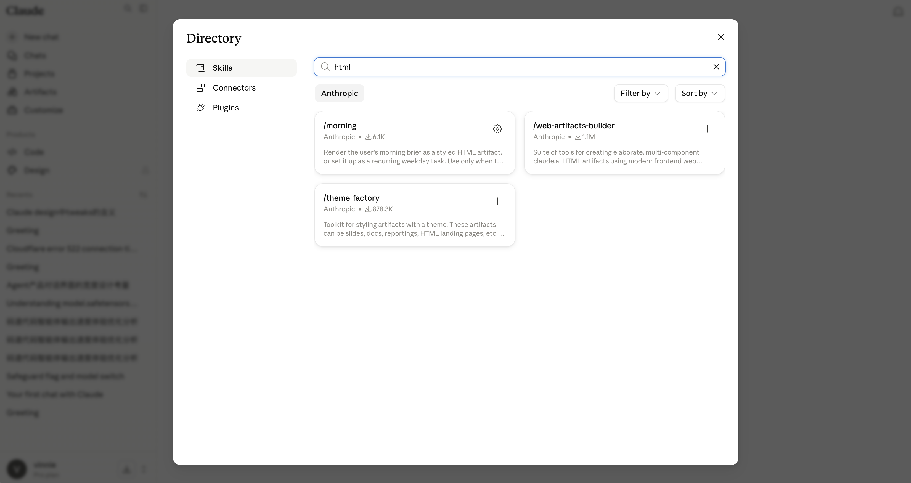
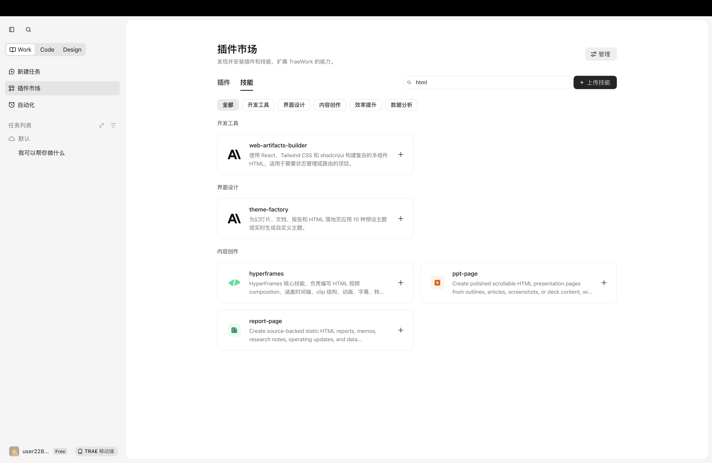
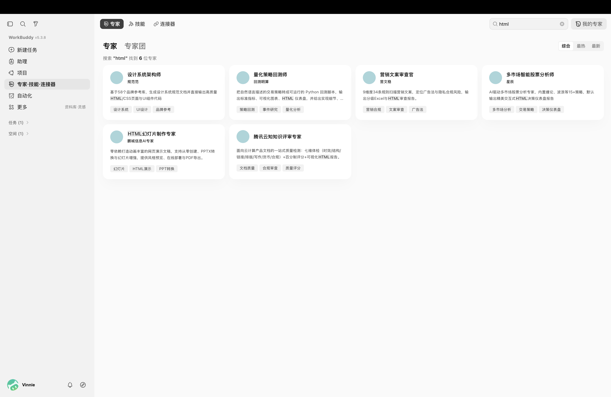
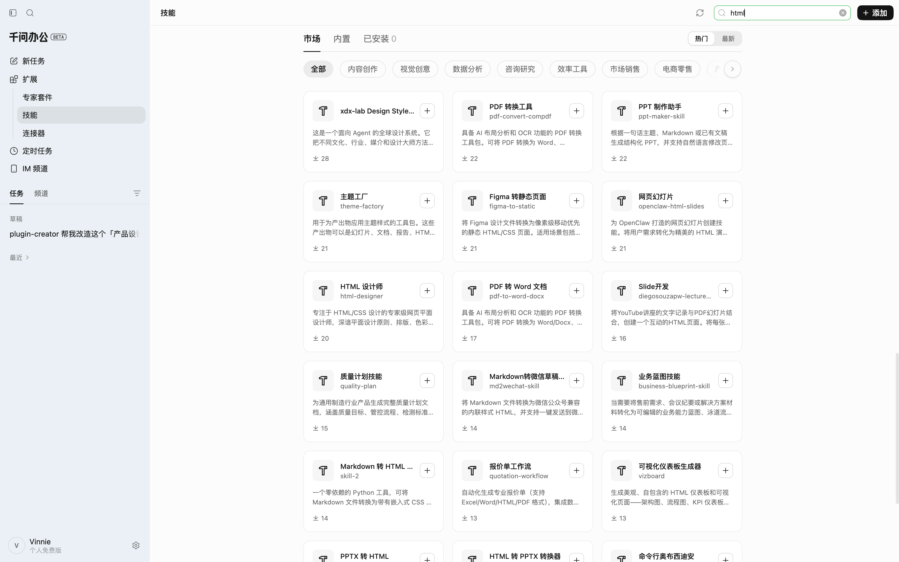
html，截图为原始界面。共同结论：没有一款把「把资料做成网页成果」收敛为一位可委托、对结果负责的专家——用户拿到的是一堆需要自己挑选、自己串联、自己验收的工具。这正是码道 Work 的空位。| 能力单元 | Claude | TraeWork | WorkBuddy | 千问办公 | 它只解决哪一段 |
|---|---|---|---|---|---|
| web-artifacts-builderANTHROPIC · 1.1M | ✓ | ✓ | ✓ | — | L5多组件 HTML 工件的实现 |
| theme-factory / 主题工厂ANTHROPIC · 878.3K | ✓ | ✓ | ✓ | ✓ | L4给产出物套 10 套预设主题 |
| report-pageTRAEWORK · 内容创作 | — | ✓ | — | — | L4带来源的静态 HTML 报告 |
| vizboard 可视化仪表板千问办公 · 装机 13 | — | — | — | ✓ | L5自包含 HTML 仪表板与图表 |
| 格式转换族PDF / WORD / PPTX / MD ↔ HTML | — | — | — | ✓ | L2把资料读进来 / 换个壳出去 |
| 垂直行业专家WORKBUDDY · 6 位 | — | — | ✓ | — | L1按行业分角色，非按交付物 |
| 内容 / 数据 / 运行 / 体验 / 安全对账没有任何一家提供 | — | — | — | — | L6判断这份成果能不能交付 |
同两个 Skill 同时出现在 Claude 官方目录、TraeWork 插件市场与 WorkBuddy 技能市场（后者标注来源 codebuddy-plugins-official）。谁都能装，方法本身不构成壁垒。
真正没人做的是两层：L1 让用户只面对一个对结果负责的主体，L6 用证据判断能不能交付。
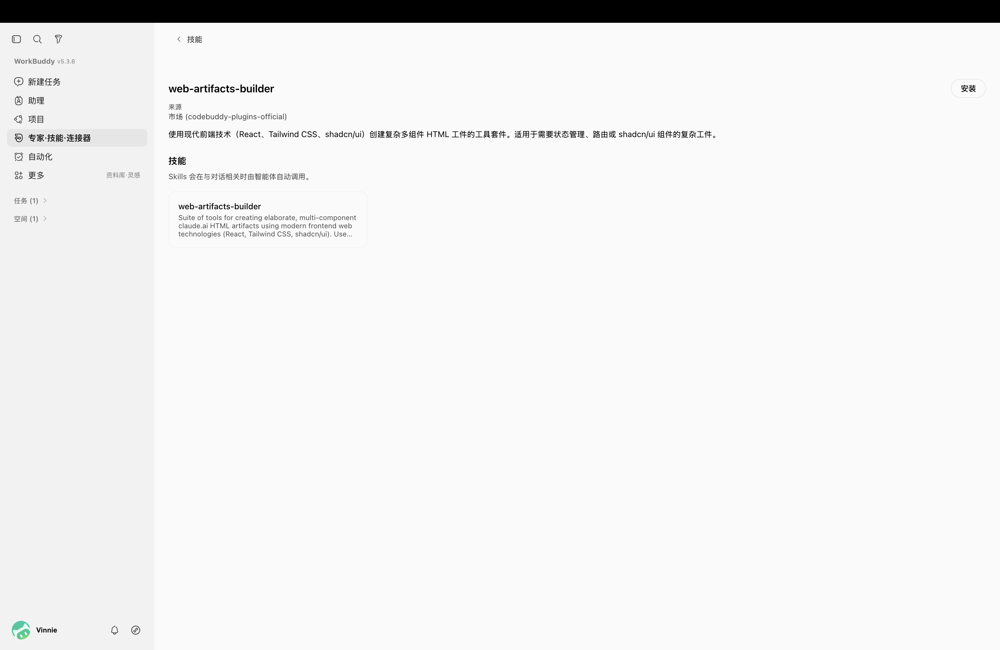
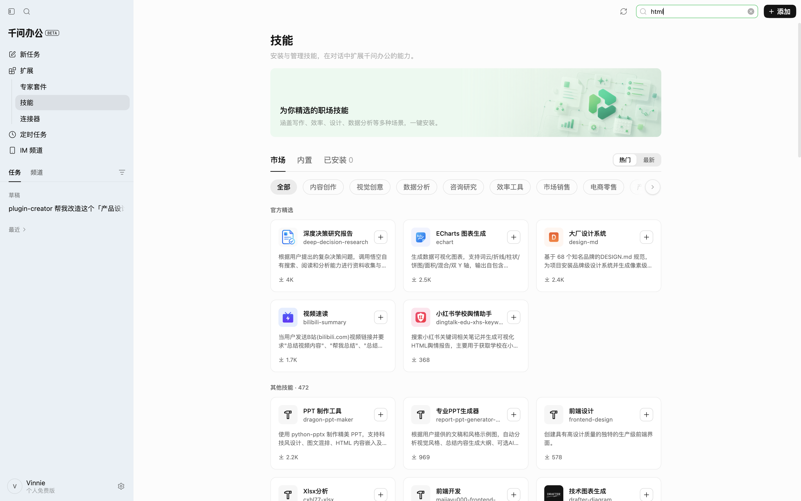
用户带着真实资料进入，而不是从一句提示词开始。
先由文档解析工具处理版面、表格、公式与图片。
模型只面对结构化内容，负责分析与表达，不啃原始版面。
由「财报数据 HTML 页面生成专家」角色约束版式与图表。
参数提取器先剥掉解释文本，后端再落成 .html 文件。
用户拿到预览与地址，不必理解代码、框架与部署。
Dify 工作流实现案例，不等于官方产品已原生具备完整能力；扣子空间的公开案例可以证明「办公资料网页化、规划后执行、插件扩展、网页预览与分享」这条产品路径已经出现。社区文章中的「几分钟完成」「效率提升若干倍」属于作者个案展示，本文不作为普遍性能承诺引用。不是「生成一个漂亮网页」，而是定义角色背景、工作目标、技术要求、设计规范与输出格式，把易漂移的自由生成压成稳定的场景模板。
先用文档解析工具把表格、公式、版面、图片转成机器可处理内容，再交给模型。解析工具负责「读出来」，模型负责「分析和表达」。
模型产出 HTML 后加一层参数提取，只保留代码、过滤解释文本。承认模型输出是不稳定的中间结果，必须处理后才能进入文件生成。
后端接收内容、生成文件、落到存储、返回地址；扣子空间同类案例直接呈现预览或分享页，而不是让用户复制代码、建文件、起服务。
| 优先级 | 场景 | 输入 | 典型产物 | 验收重点 |
|---|---|---|---|---|
| P0 | 资料可视化报告 | PDF、Word、网页、会议纪要 | 行业研究、竞品分析、项目复盘网页 | 结论与来源对应、结构清楚 |
| P0 | 数据看板与经营简报 | Excel、CSV、表格 | 经营看板、趋势分析、指标简报 | 计算正确、图表与原数据一致 |
| P0 | 对比与审阅工具 | 两份文档、版本或方案 | 版本差异、方案对比、意见归类页面 | 差异完整、定位准确、可筛选 |
| P0 | 互动手册与演示 | 培训资料、方案、知识文档 | 培训课件、操作指南、客户方案页 | 阅读路径清晰、互动可用 |
| P1 | 轻量业务工具 | 规则说明、表格字段 | 计算器、格式转换器、查询与筛选工具 | 输入输出规则正确 |
| P1 | 活动与传播单页 | 文案、图片、品牌资料 | 活动页、邀请页、专题页 | 品牌一致、移动端可读 |
| P2 | 多页面产品或正式网站 | 产品需求、用户流程、设计系统 | 多页面网站、业务系统前端 | 应转交产品体验设计专家或码道 Code |
生成带来源与指标解释的管理看板：核心指标、趋势、异常项与口径说明。
生成时间线、问题归因与行动项，把散落在多份材料里的过程重新连起来。
生成差异高亮、维度筛选与结论摘要，把「读两遍找不同」变成一次筛选。
他负责理解目标、选择正确的网页类型、组织内容、调用所需能力、汇总冲突，并对交付结果负责。
用户不需要手动组建「解析专家 + 数据专家 + UI 专家 + 前端专家」，也不需要理解 Skill 与插件目录。
web-artifacts-builder、theme-factory 已在三家复用——方法层不构成壁垒。没有任何一家提供 L1 单一责任主体 与 L6 验证层，而这正是码道基于 IDE 底座最容易建立优势的两层。结论、数字、引用与原资料一一对应，冲突显式提示而不自动抹平。
计算、筛选、图表与单位正确，图上的每个点都能对回原表。
HTML 能打开、交互无报错、外部资源加载正常。
信息层级、移动端、键盘与基础可读性达标。
敏感信息、外链、脚本与分享权限受控。
把目标确认、视觉探索、代码实现、设计 QA 与分享压缩为一条短链。
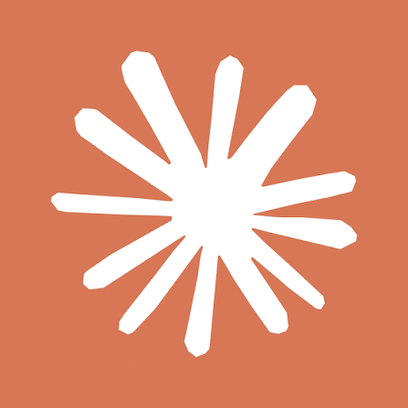
Claude以明确的视觉立场约束前端生成，重点避免模板化和默认 AI 审美。
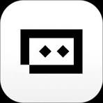
TraeWork既提供连续设计模式，也通过界面设计插件与相关 Skills 补充专项能力。
用职业角色建立任务预期，再通过团队分工承接复杂、多专业任务。
把探索、定义、设计、验证与交付拆成可复用、可串联的方法链。
html」证明了内容交付侧没有责任主体；产品体验侧的情况不同——五款平台都在建设计能力，但各用一种形态承载。先看清它们优化的是什么、代价在哪，再谈码道的产品体验设计专家该怎么做。frontend-design 是一个 Skill，其余四款是插件、套件或平台。本页比较的是能力构建方式，不是产品规模。| 产品 | 用户入口 | 能力载体 | 突出优势 | 主要代价 | 最佳场景 |
|---|---|---|---|---|---|
| 自然语言 / 插件 | 10 Skill | 实现与 QA 闭环 | 方法颗粒度少于千问 | 设计到代码交付 | |
| Claude | 代码任务 | 单 Skill | 视觉风格集中 | 产品逻辑链较短 | 高表现力前端 |
| TraeWork | Design / 插件市场 | 模式 + 扩展 | 工作台与专项能力并存 | 入口与能力选择成本 | 持续迭代设计 |
| 专家 / 专家团 | 角色与团队 | 普通用户易委托 | 过程与验收不透明 | 复杂跨专业任务 | |
| 套件 / 快捷命令 | 28 Skill | 方法覆盖最完整 | 链路与维护复杂 | 专业流程标准化 |
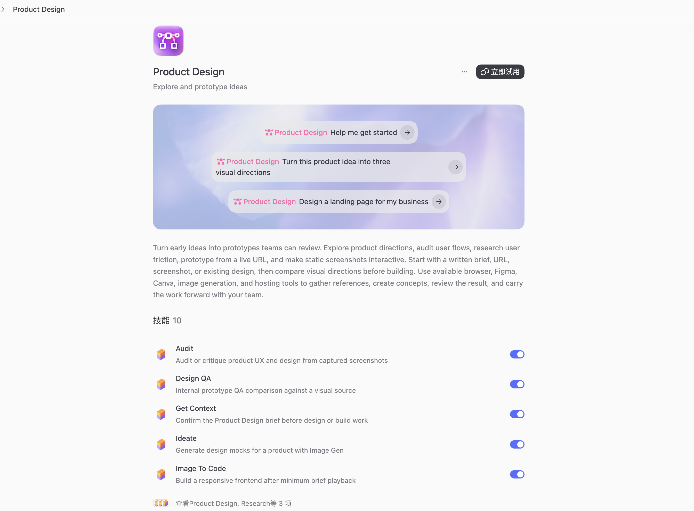
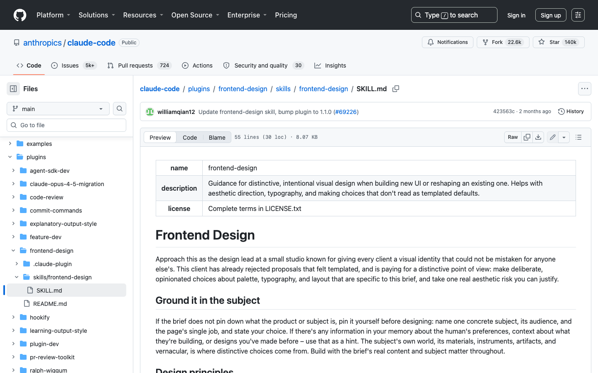
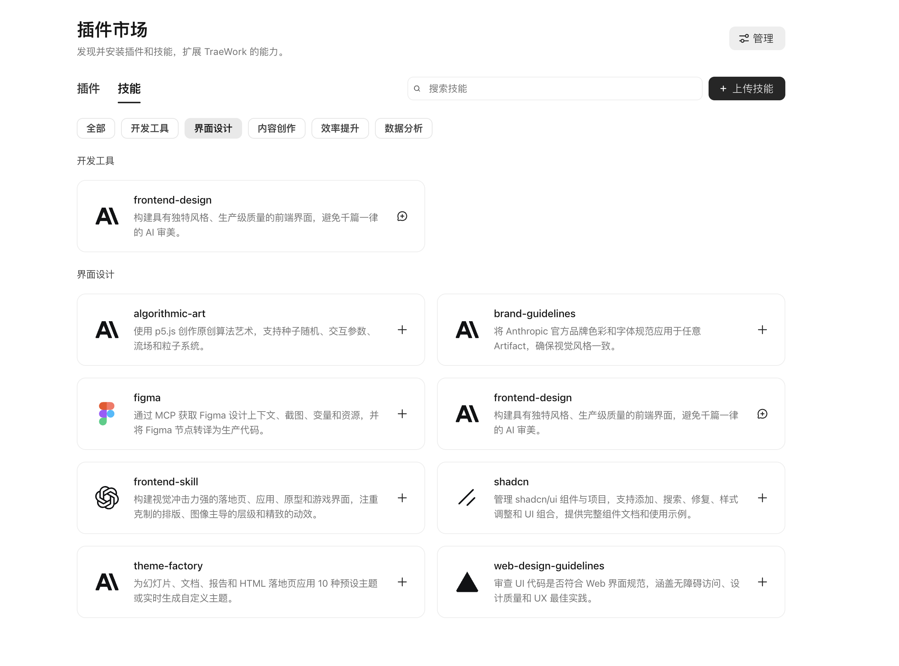
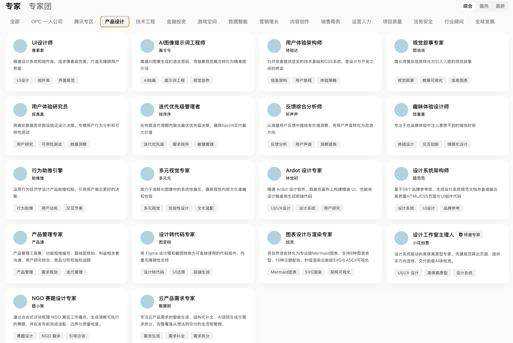
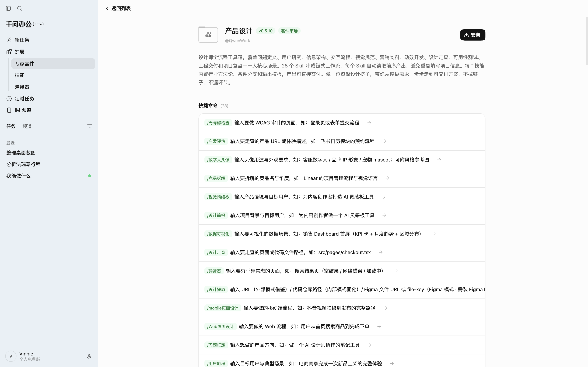
本地套件共 19,204 行 Skill 文档，甚至覆盖研究、无障碍、可用性、动效、PRD 和复盘。
.spark/context/ 与 spark-output/context/ 两套约定并存PROTOCOL DRIFT| 产品 | 能力路由 | 上下文持久化 | 真实工具执行 | 验证门禁 | 主要技术风险 |
|---|---|---|---|---|---|
| 插件 Router | 用户上下文 + 项目 | 浏览器 / Figma / Repo | 截图 QA + 分享 | 工具不可用会使闭环降级 | |
| Claude | Skill 描述匹配 | 会话 / 代码仓 | 工程 Agent | 通用测试 / 人工判断 | 缺少设计阶段状态与专属 QA |
| TraeWork | 模式 + Agent 拆解 | 项目 + Global Memory | 插件 / Skills / 工具 | 预览与评论迭代 | 模式、插件与 Skill 边界分散 |
| 专家 / 专家团 | 公开细节有限 | MCP + 自定义 Skill | 外显证据有限 | 多专家依赖与冲突可能成为黑盒 | |
| Skill Graph / 推荐链 | JSON + Marker | Connector 增强 | Check / Test / QA | 文本协议漂移，缺强运行时校验 |
用户要的是可用的页面、原型或体验方案，却被要求先理解 UX、UI、设计系统、Figma、前端框架、浏览器测试之间的关系。
直接生成前端容易跳过面向谁、解决什么任务、主流程如何完成、信息如何组织、加载/空/错误/权限/成功状态如何反馈。
每轮依赖临时 Prompt：同一产品不同页面视觉语言不同、组件与间距缺少规则、改一页无法同步其他页、容易回到「AI 风」模板。
只显示连续对话时，用户无法判断当前由谁负责、为什么采用这个方案、哪些已完成、哪个结论还没验证、失败后从哪继续。
只返回代码、截图或一句「页面已完成」，不足以证明能运行、关键交互可用、响应式无溢出、与参考一致、主任务可完成、修改没引入新问题。
1 先表达目标，不必先理解能力体系。
2 在关键判断前看懂方案，而不是事后返工。
3 无需监控全部过程，也能随时理解当前状态。
4 每次修改都保持上下文和设计一致性。
5 无需重建上下文即可验收结果。
用户目标 → 专家判断任务类型与复杂度 → 单专家执行或自动组建专家团 → 调用对应 Skills → Skills 在授权范围内调用插件与连接器 → 质量闸门验证阶段产物 → 用户验收最终结果。
| 角色 | 主要职责 | 关键输入 | 阶段产物 |
|---|---|---|---|
| 设计负责人 | 任务理解、范围控制、路径编排、决策汇总和最终交付 | 用户目标、资料、约束 | 任务回放、计划、统一结论、交付包 |
| UX 架构师 | 用户任务、旅程、信息架构、关键流程和状态设计 | 需求与现有体验 | 用户旅程、页面结构、状态说明、交互方案 |
| UI 与设计系统专家 | 视觉方向、层级、Token、组件和品牌一致性 | UX 结构、品牌资料 | 视觉方向、设计规则、关键界面 |
| 前端设计工程师 | 组件复用、响应式、交互实现和工程集成 | 已确认设计、代码仓 | 可运行页面、组件、样式和交互 |
| Design QA | 体验、视觉、无障碍与工程质量验证 | 设计契约、参考图、运行页面 | 检查结果、对比证据、阻断项与修正记录 |
从零设计产品、功能或页面；有初步想法但缺产品结构；需要从需求到前端的完整交付。
截图转前端、设计稿转代码、复刻现有网页、把静态设计变成可交互原型。
优化已有页面或流程、在现有代码仓增功能、基于现有设计系统扩展、保留风格局部改版。
查找 UX 问题、审查视觉一致性与可访问性、分析完整流程、为改版建立问题清单。
| 阶段 | 从想法设计 | 截图 / Figma / URL 实现 | 改造现有产品 | 体验审计 |
|---|---|---|---|---|
| 输入重点 | 用户、场景、目标 | 参考源、还原范围、技术栈 | 现有代码、问题、改动边界 | 审计目标、真实流程 |
| 必做 UX | 完整旅程与结构 | 确认交互和状态 | 现状诊断与影响分析 | 真实任务走查 |
| 视觉探索 | 通常需要 | 通常不需要 | 视改版范围决定 | 不进入完整视觉设计 |
| 实现方式 | 新建原型或应用 | 高还原实现 | 局部修改与组件复用 | 默认不修改，用户确认后进入 |
| 核心对比 | 是否解决目标 | 与参考源差异 | 改造前后差异 | 问题与证据 |
| 关键闸门 | 产品逻辑、视觉方向 | 还原度、响应式、交互 | 范围控制、回归 | 证据充分性 |
| 默认交付 | 设计契约、原型、代码、验收 | 代码、预览、对比截图 | 修改代码、影响说明、回归结果 | 审计报告、优先级和改进方向 |
目标用户、核心任务、范围与非目标、交付物、技术和品牌约束、单专家或专家团路径。
用户旅程、信息架构、主流程、关键状态、异常恢复、决策成本。
视觉概念、信息层级、品牌一致性、Token、组件规则、可实现性。
构建与运行、路由和交互、响应式、组件复用、修改范围、控制台错误。
主任务完成、UX/UI/工程结果、参考源对比、未验证项、Demo 与真实能力边界、交付包完整性。
1 一个统一的任务入口，减少用户选择成本；
2 两位责任清晰的专家，分别承担内容交付与产品体验；
3 一个统一任务工作台，展示阶段、产物、证据和风险；
4 一套可解释路由，让用户理解推荐原因并可调整；
5 一套无损转交机制，让网页成果可以升级为产品，再由 Code 完成工程接管。
用户描述目标、添加资料，不必先选专家
内容 → 数据 → 表达 → 网页 → 对账 → 分享
目标 → UX → UI → 前端 → 联合验收
工程计划 → 开发 → 测试 → 集成 → 交付
阶段与责任 · 产物区 · 验证区 · 转交机制
| 指标类型 | HTML 创作专家 | 产品体验设计专家 |
|---|---|---|
| 北极星信号 | 被实际打开、分享或复用的可验证网页成果数 | 被验收并继续投入使用或开发的可验证产品成果数 |
| 启动 | 上传资料后的有效任务启动率 | 任务回放确认率 |
| 过程 | 澄清轮数、首次预览时间、修改成功率 | 高影响问题前置发现率、阶段返工、恢复成功率 |
| 质量 | 数据与引用校验、运行通过、分享安全 | 主任务完成、状态完整、视觉一致、构建与交互通过 |
| 连续性 | 模板复用、周期更新 | 设计契约复用、跨阶段上下文保留 |
| 路由 | 转交率、上下文保留率 | 路由认可率、无效转交率 |
html（第 11—12 页，可点击放大核对）。② 公开案例——火山引擎开发者社区的 AI 财报分析与 HTML 可视化工作流、扣子空间相关案例。③ 内部文档二次拆解——《码道Work-HTML生成专家产品方案-参考火山引擎实践》《码道Work-UIUX设计专家-用户使用旅程与能力编排方案》《五款AI工作平台-设计能力构建竞品分析》，未新增未经验证的用户研究数据或业务指标。结论只走到证据能支撑的地方：形态缺口与产品路径可证，生成质量、效率提升与路由认可度待同题实测。